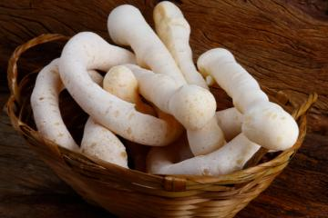
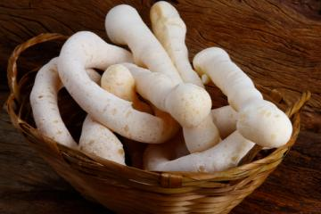

NOSSOS PRODUTOS

 

A Padaria Freitas é conhecida pela qualidade e cuidado na seleção de ingredientes, oferecendo produtos frescos e saborosos. Com atendimento acolhedor, conquistou uma ótima reputação nos bairros onde atua, tornando-se referência em pães, bolos e quitutes.